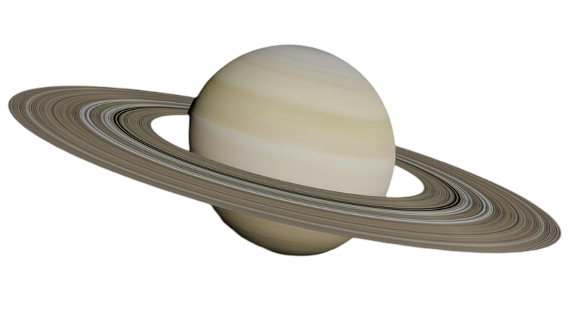

Saturn

Saturn was named by the Ancient Romans after the Roman god of
agriculture and wealth.
Saturn's latin name is Sāturnus.
Saturn's Ancient Greek name is Cronus.
The Greek letters for Saturn are Κρόνος (Kronos).
Saturn's diameter is approximately 74,897 miles, over nine times wider
than Earth's diameter, which is 7,917 miles.